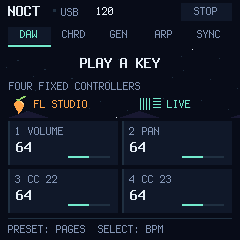

Подключи FM-1
USB-кабель с передачей данных. Закрой FL Studio, Live и другие приложения, использующие MIDI-порт.
Устройство не подключено
M-VAVE FM-1 / MIDI 0.3.0
Аккорды. Генератор. Синхронизация.
FL Studio и Ableton Live.
Один MIDI-пресет. Четыре постоянных CC.
Темп DAW и все кнопки — в работе.

CONNECT / VERIFY / INSTALL
В 0.3.0 добавлены двусторонний BPM, MIDI Clock/Start/Stop, шесть типов аккордов, генератор нот и FX для эффектов DAW. После обновления обязательно переустанови DAW-скрипты ниже: именно они передают BPM и состояние эффектов. Проверено в симуляторе; аппаратная проверка ещё предстоит. Сохрани данные и не отключай USB во время записи.
USB-кабель с передачей данных. Закрой FL Studio, Live и другие приложения, использующие MIDI-порт.
Устройство не подключено
Проверяем доступность сборки…
Файл пока не выбран
Проверим SHA-256, модель устройства и идентификатор прошивки. Затем загрузчик запишет образ по USB MIDI.
Готов к подключению.
0%NOCT FM installer ready.
AFTER INSTALL
Установи свежий скрипт: он передаёт BPM и состояние FX. Для точного движения по сетке включи MIDI Sync на выходе DAW. SEL — аккорды, SEQ — генератор, EDIT — новый рисунок, GLO — синхронизация, FX — эффекты DAW. Ноты остаются на канале 1, ручки CC20–23 — на канале 16.
Скачать скрипты FL Studio и Ableton ↓
Инструкция и все кнопки ↗Используй официальный M-UPGRADE и инструкцию восстановления для своей версии FM-1. Этот установщик принимает только сборку NOCT из своего манифеста.
Загрузки M-VAVE ↗